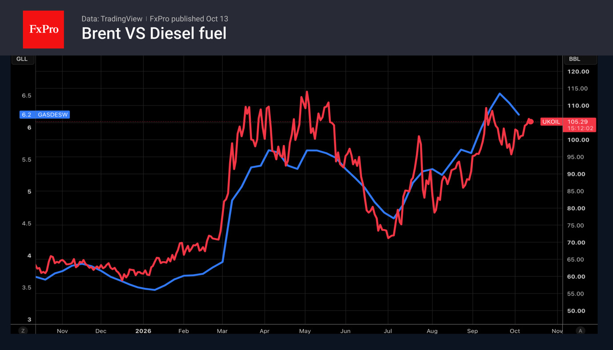
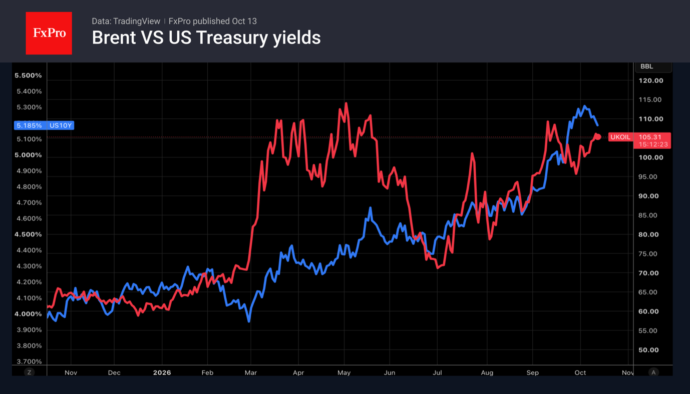

- Oil exports from the Middle East fell significantly in October.
- The US-Russia deal on diesel fuel will not reduce oil demand, which is rising in China.
The US dollar hit a new high on Monday, as the dip in oil prices following the diesel supply deal struck between the US and Russia was offset by escalating tensions in the Middle East. At the same time, investors are awaiting inflation data and a speech by Kevin Warsh, prompting some of them to close out their positions. As a result, the USD index was unable to hold onto its peak and retreated slightly.

According to Kpler, oil flows through the Strait of Hormuz fell significantly in October. In the seven days leading up to 10 October, average shipments stood at 10.5 million bpd, a 38% fall from the pre-war level of 17.1 million bpd. Reuters reports higher figures, stating that in September, an average of 18.11 million bpd passed through, compared with 18.22 million bpd over the eight weeks leading up to the conflict in the Middle East. Exporters are alarmed by the resumption of attacks on tankers and facilities in Saudi Arabia.
The deal between Washington and Moscow, whilst it may look impressive on paper, will in fact cover only nine days’ worth of US demand. Moreover, deliveries will be spread out over time. A sustained fall in prices will require a systematic resolution of supply shortages and risks arising from conflicts in oil-producing countries.
Alongside high geopolitical risk premiums and record-high transport costs, the Brent rally is being fuelled by reports that China is increasing its oil imports. A significant drop in these imports during the height of the conflict in the Middle East prevented Brent from reaching new record highs and helped avert a global economic crisis. According to Bloomberg, 96 tankers capable of carrying 2 million barrels or more will arrive at Chinese ports over the next 90 days. This is the highest figure since the end of February.

Nevertheless, several points are worth noting. Firstly, the closer WTI crude gets to $100, the more vigorous the US’s efforts become to resolve conflicts or enforce peace. For the slightly more expensive Brent, the intervention threshold begins at around $105. Secondly, oil supply and demand are price-inelastic, so a 1% shift in the balance can move prices up to 10-20 percentage points. In other words, one should not be surprised by a fall in prices, despite objectively modest steps, especially as a kind of reflex seems to have taken hold in the market.
The third factor is the increase in demand from China. For a long time, China had been cutting back on purchases at high prices and drawing on its reserves, on the assumption that the conflict with Iran would be short-lived, which became a key factor in keeping prices in check during the spring. But by the autumn, China had switched to purchasing contracts with deliveries in October, and demand continues to rise. Added to the reduction in supplies are new record highs in tanker freight costs, reaching a third of the total cost of the crude, and supply volatility, which is driving up the risk premium. All of this carries the risk of accelerating inflation, which in turn leads to higher bond yields and a further strengthening of the dollar.
The FxPro Analyst Team